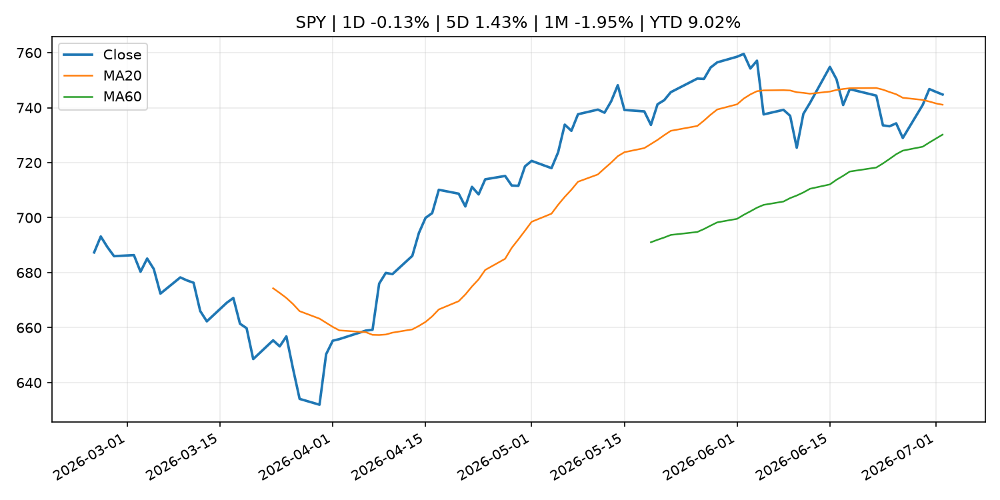
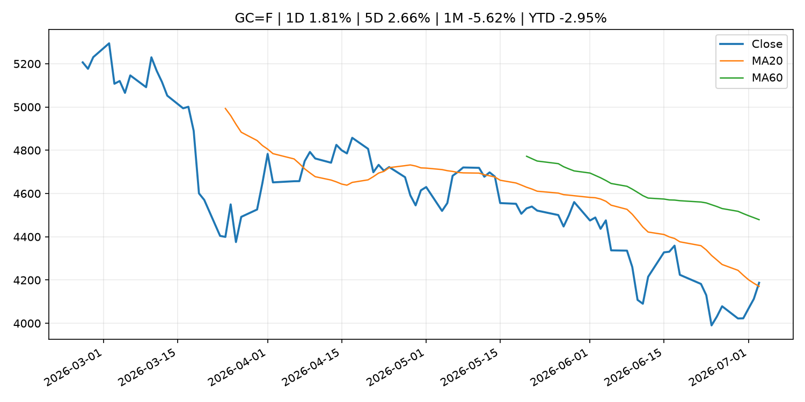
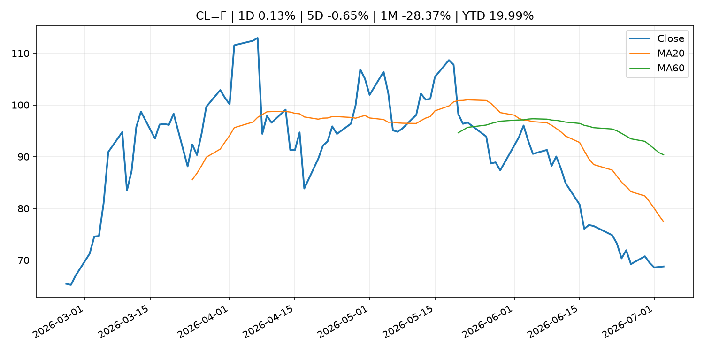
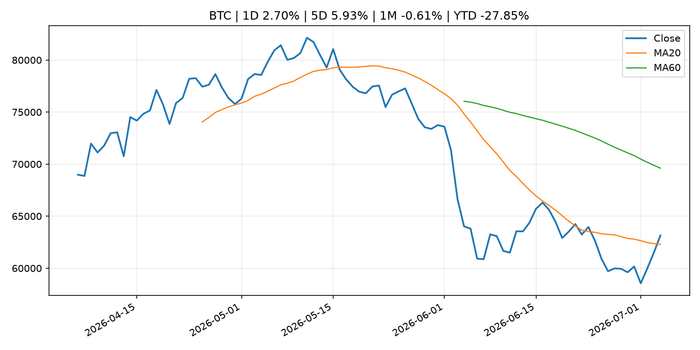
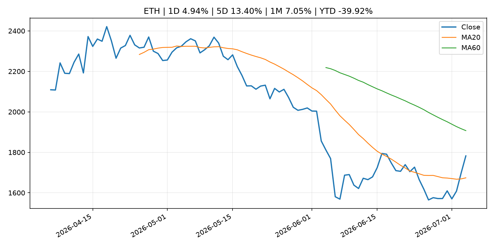

Global Macro Morning Briefing - 2026-07-05
Not financial advice / 非投资建议。
0. 今日总览
- 市场状态：unknown。市场信号不足，暂不判断明确状态。
- 今日三大主线：
- crypto_market_structure: This sanctioned Russian stablecoin claims it processes billions, but blockchain analysts disagree
- 一句话结论：今日晨报重点关注：加密市场结构和监管变化会影响 BTC、ETH 及相关股票的风险溢价。；这条信息暂未匹配到重大宏观、政策或市场事件，更适合作为背景跟踪。。跨资产方面，SPY 1D -0.13%；QQQ 1D -1.73%；^VIX 1D -2.65%；TLT 1D -0.01%；GC=F 1D 1.81%；CL=F 1D 0.13%；BTC 1D 2.70%；ETH 1D 4.94%；市场信号不足，暂不判断明确状态。政策、通胀、利率、美元、美债、能源和加密监管仍是主要观察线索。所有结论仅基于公开数据与短摘要整理，不构成投资建议。
1. 隔夜跨资产市场
- 美股：SPY 1D -0.13%，QQQ 1D -1.73%，整体趋势需结合 VIX 和利率确认。
- 美债/美元：TLT 1D -0.01%，美元指数 1D -0.00%，是判断折现率压力的核心线索。
- 黄金/原油：黄金 1D 1.81%，原油 1D 0.13%，用于观察避险、通胀和地缘风险。
- 加密：BTC 1D 2.70%，ETH 1D 4.94%，关注是否独立于纳指走出加密自身行情。
- 港股/A股：恒生 1D 1.28%，沪深300/上证 1D n/a，重点看中国政策预期与人民币线索。
- 风险观察：关注后续数据是否确认当前跨资产信号。
US_EQUITY
| symbol | latest close | 1D | 5D | 1M | YTD | trend |
|---|---|---|---|---|---|---|
| SPY | 744.78 | -0.13% | 1.43% | -1.95% | 9.02% | uptrend |
| QQQ | 712.60 | -1.73% | -0.53% | -4.50% | 16.23% | range_bound |
| DIA | 527.88 | 1.05% | 1.66% | 2.69% | 9.15% | uptrend |
| IWM | 297.58 | -0.58% | -0.44% | 2.03% | 19.62% | uptrend |
| VTI | 368.76 | -0.14% | 1.31% | -1.50% | 9.65% | uptrend |
US_MACRO_MARKET
| symbol | latest close | 1D | 5D | 1M | YTD | trend |
|---|---|---|---|---|---|---|
| ^VIX | 16.15 | -2.65% | -14.51% | 2.41% | 11.30% | range_bound |
| DX-Y.NYB | 100.86 | -0.00% | -0.50% | 1.33% | 2.48% | uptrend |
| TLT | 85.51 | -0.01% | -2.11% | -0.16% | -1.75% | range_bound |
| IEF | 94.12 | 0.10% | -0.71% | -0.13% | -2.04% | downtrend |
COMMODITIES
| symbol | latest close | 1D | 5D | 1M | YTD | trend |
|---|---|---|---|---|---|---|
| GC=F | 4,187.30 | 1.81% | 2.66% | -5.62% | -2.95% | range_bound |
| SI=F | 62.81 | 3.58% | 6.08% | -14.51% | -10.97% | strong_downtrend |
| CL=F | 68.78 | 0.13% | -0.65% | -28.37% | 19.99% | strong_downtrend |
| BZ=F | 72.13 | 0.46% | 0.19% | -26.25% | 18.73% | strong_downtrend |
| NG=F | 3.24 | 1.53% | 0.43% | 0.96% | -10.31% | uptrend |
| HG=F | 6.22 | 1.79% | 1.34% | -3.97% | 10.35% | range_bound |
HK_MARKET
| symbol | latest close | 1D | 5D | 1M | YTD | trend |
|---|---|---|---|---|---|---|
| ^HSI | 23,350.03 | 1.28% | 1.18% | -10.32% | -11.35% | strong_downtrend |
| 0700.HK | 431.20 | 0.23% | 2.33% | -10.47% | -30.79% | strong_downtrend |
| 9988.HK | 94.10 | -0.42% | -0.95% | -28.11% | -36.85% | strong_downtrend |
| 3690.HK | 71.60 | 1.06% | 8.32% | -16.26% | -31.55% | strong_downtrend |
| 1810.HK | 22.96 | 1.59% | 2.96% | -22.48% | -43.00% | strong_downtrend |
| 1211.HK | 84.10 | 7.41% | 10.59% | -13.07% | -14.84% | range_bound |
CRYPTO
| symbol | latest close | 1D | 5D | 1M | YTD | trend |
|---|---|---|---|---|---|---|
| BTC | 63,148.69 | 2.70% | 5.93% | -0.61% | -27.85% | range_bound |
| ETH | 1,782.37 | 4.94% | 13.40% | 7.05% | -39.92% | range_bound |
| SOLANA | 81.80 | 1.46% | 14.56% | 22.63% | -34.31% | range_bound |
| BINANCECOIN | 576.07 | 3.23% | 4.56% | -4.54% | -33.26% | downtrend |
| RIPPLE | 1.16 | 6.78% | 10.64% | 2.52% | -36.93% | range_bound |
2. 今日最重要的 10 条新闻
1. This sanctioned Russian stablecoin claims it processes billions, but blockchain analysts disagree
- 来源：CoinDesk
- 时间：2026-07-03T19:18:59+00:00
- 地区：global
- 事件类型：crypto_market_structure
- 重要性层级：Tier 2
- 一句话摘要：This sanctioned Russian stablecoin claims it processes billions, but blockchain analysts disagree
- 为什么重要：加密市场结构和监管变化会影响 BTC、ETH 及相关股票的风险溢价。
- 可能影响：主要影响 BTC，方向为 mixed，强度 high；加密监管或 ETF 进展会改变 BTC 的资金流和风险溢价。
- 资产：BTC 方向：mixed 强度：high 原因：加密监管或 ETF 进展会改变 BTC 的资金流和风险溢价。
- 资产：ETH 方向：mixed 强度：high 原因：监管框架会影响 ETH 产品化和机构参与度。
- 资产：COIN 方向：mixed 强度：medium 原因：监管清晰度和执法风险会影响交易平台估值。
- 资产：crypto market 方向：mixed 强度：high 原因：信息影响整个加密市场结构，但方向取决于细节。
- 原文链接：https://www.coindesk.com/business/2026/07/03/this-sanctioned-russian-stablecoin-claims-it-processes-billions-but-blockchain-analysts-disagree
2. Why June’s jobs and inflation data are bullish for bonds
- 来源：MarketWatch Top Stories
- 时间：2026-07-04T18:37:00+00:00
- 地区：US
- 事件类型：other
- 重要性层级：Tier 3
- 一句话摘要：The new jobs report is worse than many people realize.
- 为什么重要：这条信息暂未匹配到重大宏观、政策或市场事件，更适合作为背景跟踪。
- 可能影响：主要影响 DXY，方向为 positive，强度 high；通胀压力可能推高政策利率预期并支撑美元。
- 资产：DXY 方向：positive 强度：high 原因：通胀压力可能推高政策利率预期并支撑美元。
- 资产：TLT 方向：negative 强度：high 原因：通胀上行通常推升收益率、压低长债价格。
- 资产：QQQ 方向：negative 强度：high 原因：更高利率对成长股估值折现率不利。
- 资产：SPY 方向：mixed 强度：medium 原因：名义增长可能支撑收入，但更高利率压制估值。
- 资产：GC=F 方向：mixed 强度：medium 原因：通胀对黄金是支撑，但实际利率上行会形成压力。
- 资产：BTC 方向：mixed 强度：medium 原因：抗通胀叙事和流动性收紧可能相互抵消。
- 原文链接：https://www.marketwatch.com/story/why-the-jobs-and-inflation-data-are-bullish-for-bonds-fcedffd2?mod=mw_rss_topstories
3. Here’s what’s worth streaming in July 2026 on Netflix, Hulu, HBO Max and more
- 来源：MarketWatch Top Stories
- 时间：2026-07-04T19:01:00+00:00
- 地区：US
- 事件类型：other
- 重要性层级：Tier 3
- 一句话摘要：Why it’s a good month to save on streaming, despite the return of ‘Enola Holmes’ to Netflix and ‘Silo’ to Apple
- 为什么重要：这条信息暂未匹配到重大宏观、政策或市场事件，更适合作为背景跟踪。
- 可能影响：更偏背景信息，短期市场影响可能有限。
- 资产：暂无明确资产映射
- 方向：unknown
- 强度：low
- 原因：公开信息不足以判断方向。
- 原文链接：https://www.marketwatch.com/story/heres-whats-worth-streaming-in-july-2026-on-netflix-hulu-hbo-max-and-more-58d07528?mod=mw_rss_topstories
3. 政策与央行观察
1. This sanctioned Russian stablecoin claims it processes billions, but blockchain analysts disagree
- 来源：CoinDesk
- 时间：2026-07-03T19:18:59+00:00
- 地区：global
- 事件类型：crypto_market_structure
- 重要性层级：Tier 2
- 一句话摘要：This sanctioned Russian stablecoin claims it processes billions, but blockchain analysts disagree
- 为什么重要：加密市场结构和监管变化会影响 BTC、ETH 及相关股票的风险溢价。
- 可能影响：主要影响 BTC，方向为 mixed，强度 high；加密监管或 ETF 进展会改变 BTC 的资金流和风险溢价。
- 资产：BTC 方向：mixed 强度：high 原因：加密监管或 ETF 进展会改变 BTC 的资金流和风险溢价。
- 资产：ETH 方向：mixed 强度：high 原因：监管框架会影响 ETH 产品化和机构参与度。
- 资产：COIN 方向：mixed 强度：medium 原因：监管清晰度和执法风险会影响交易平台估值。
- 资产：crypto market 方向：mixed 强度：high 原因：信息影响整个加密市场结构，但方向取决于细节。
- 原文链接：https://www.coindesk.com/business/2026/07/03/this-sanctioned-russian-stablecoin-claims-it-processes-billions-but-blockchain-analysts-disagree
4. 市场异动与图表
- QQQ 下跌 -1.73%
- Gold 上涨 1.81%
- BTC 上涨 2.70%
- ETH 上涨 4.94%
SPY

QQQ

^VIX

TLT

GC=F

CL=F

BTC

ETH

^HSI

5. 华尔街与机构公开观点
- 暂无可靠公开观点。
6. 今日重点关注
- 经济数据：经济数据：暂无可靠公开日历数据；如配置经济日历源后可自动填充。
- 央行讲话：央行讲话：暂无可靠公开日历数据；重点跟踪 Fed、ECB、BoJ、PBOC 官网 RSS。
- 财报：财报：暂无可靠数据。
- 政策事件：政策事件：暂无可靠数据。
- 风险提醒：风险提醒：关注数据源失败项、突发地缘风险、利率和美元的二阶反应。
7. 英文金融表达与宏观概念
- inflation expectations：通胀预期，指家庭、企业或市场对未来通胀的预估。 例句：Inflation expectations can shape wage bargaining and bond yields.
- real yield：实际收益率，名义利率扣除通胀预期后的收益率。 例句：Gold often reacts more to real yields than nominal yields.
- market structure：市场结构，指交易、托管、清算、ETF、监管等制度安排。 例句：Crypto market structure rules can affect institutional participation.
- terminal rate：终端利率，市场预期本轮加息周期的最高政策利率。 例句：A higher terminal rate can pressure growth stocks.
- soft landing：软着陆，指通胀回落而经济避免明显衰退。 例句：Markets often rally when data support a soft landing.
- risk-off：避险模式，资金偏向美元、国债、黄金等防御资产。 例句：A geopolitical shock can push markets into risk-off mode.
8. 背景材料
- Here’s what’s worth streaming in July 2026 on Netflix, Hulu, HBO Max and more（MarketWatch Top Stories，other）：Why it’s a good month to save on streaming, despite the return of ‘Enola Holmes’ to Netflix and ‘Silo’ to Apple
- Why June’s jobs and inflation data are bullish for bonds（MarketWatch Top Stories，other）：The new jobs report is worse than many people realize.
- Bitcoin jumps above $63,000, reversing end-June losses（CoinDesk，other）：Bitcoin jumps above $63,000, reversing end-June losses
- Bitcoin experts split over plan to freeze Satoshi's 1.1 million bitcoin as quantum threat grows（CoinDesk，other）：Bitcoin experts split over plan to freeze Satoshi's 1.1 million bitcoin as quantum threat grows
- Where can I invest my kid’s ‘Trump account’ money? The Treasury Department just answered that question.（MarketWatch Top Stories，routine_announcement）：The money in “Trump accounts” has to be invested in low-cost index funds — and now parents and investors are learning which funds they can actually use.
- Want to live longer in retirement? This one money move could add years to your life.（MarketWatch Top Stories，other）：A secure retirement portfolio acts like a health shield, calming market anxiety that can actually shorten life expectancy.
- Why bitcoin's disconnect from record-high stocks won't last（CoinDesk，other）：Why bitcoin's disconnect from record-high stocks won't last
- Bitcoin’s next parabolic run may need $1 trillion in fresh capital（CoinDesk，other）：Bitcoin’s next parabolic run may need $1 trillion in fresh capital
- Bitcoin whales bought $16.7 billion of bitcoin in 2 weeks even as ETFs bled a record $4 billion（CoinDesk，other）：Bitcoin whales bought $16.7 billion of bitcoin in 2 weeks even as ETFs bled a record $4 billion
- Bitcoin, ether traders aren't fully buying the bounce, options markets show（CoinDesk，other）：Bitcoin, ether traders aren't fully buying the bounce, options markets show
- Memory and semiconductor stocks lose momentum, bitcoin rebounds in sign of changing investor focus（CoinDesk，other）：Memory and semiconductor stocks lose momentum, bitcoin rebounds in sign of changing investor focus
- Live updates: Bitcoin rises above $62,000 as the red hot semiconductor trade starts to fade（CoinDesk，other）：Live updates: Bitcoin rises above $62,000 as the red hot semiconductor trade starts to fade
- Bitcoin ETFs see $221 million inflow, finally ending a painful 10-day selling streak（CoinDesk，other）：Bitcoin ETFs see $221 million inflow, finally ending a painful 10-day selling streak
- Ether and solana extend gains as a short squeeze lifts bitcoin toward $62,000（CoinDesk，other）：Ether and solana extend gains as a short squeeze lifts bitcoin toward $62,000
- Output Gap, Potential Growth Rate, and Labor Market Indicators（Bank of Japan Announcements，other）：Output Gap, Potential Growth Rate, and Labor Market Indicators
- Sources of Changes in Current Account Balances (Projections for July)（Bank of Japan Announcements，other）：Sources of Changes in Current Account Balances (Projections for July)
9. 数据源、失败项与免责声明
- 采集时间：2026-07-04T22:57:38
- 数据源：公开 RSS、Yahoo Finance、CoinGecko、AKShare、FRED、SEC data.sec.gov，以及用户自有 inputs/reports 文件。
- 合规说明：不绕过 WSJ、Bloomberg、FT、Reuters 等付费墙；对付费媒体只使用公开 RSS 标题、摘要、链接和发布时间。
- 免责声明：Not financial advice / 非投资建议。本项目仅供个人学习、研究和信息整理，不构成投资建议、交易建议或任何收益承诺。
- 失败或跳过的数据源：
- crypto data failed coin=dogecoin
- China market data failed symbol=上证指数: empty dataframe
- China market data failed symbol=深证成指: empty dataframe
- China market data failed symbol=创业板指: empty dataframe
- China market data failed symbol=沪深300: empty dataframe
- China market data failed symbol=中证500: empty dataframe
- China market data failed symbol=科创50: empty dataframe
- FRED_API_KEY not set; skipping FRED macro series
- SEC failed cik=0000320193
- SEC failed cik=0000789019
- SEC failed cik=0001045810
- SEC failed cik=0001318605
- SEC failed cik=0001577552